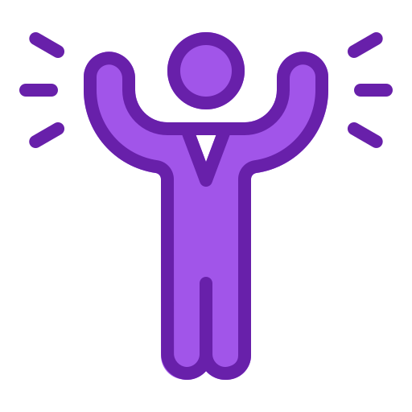
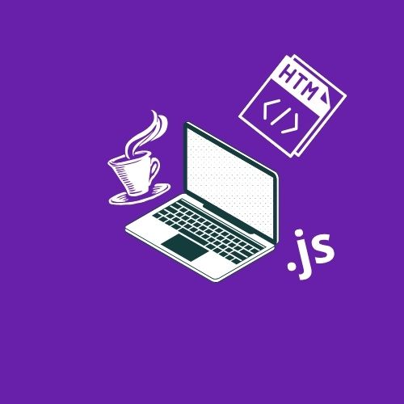
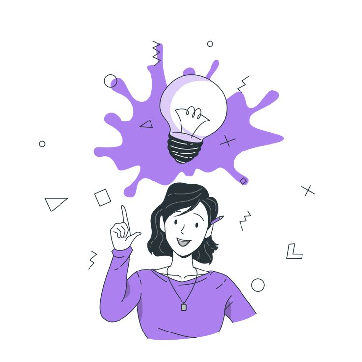

Full Stack Developer Intern, June 2023 - Aug 2023
My Role
I developed the front-end website architecture and collaborated with other developers to create back-end microservices and serverless applications. Additionally, I was responsible for designing and implementing key features for the web application. Throughout the project, I took a leadership role in overseeing various tasks, ensuring their successful completion.
Goals I created

Software Development Excellence
I wanted to gain practical experience by applying software development principles and best practices in a professional environment.

Collaborative Project Success
I wanted to contribute to team projects by actively participating in all phases, including design, development, and testing so that I could gain a deeper understanding of each cycle.

Technical Skill Advancement
I was eager to learn and improve proficiency in specific programming languages relevant to the internship role, while also enhancing my problem-solving skills.
Skills I wanted to master

Technical Proficiency
I wanted to master programming languages and tools relevant to the internship, such as JavaScript, Java or frameworks like React.

Project Management
I aimed to develop skills in project management, including organizing tasks, managing timelines, and coordinating with team members to ensure project milestones were met.

Communication
I strived to improve both written and verbal communication skills, especially in technical contexts, to effectively convey ideas, collaborate with teammates, present project progress and results, and contribute confidently during standups.
Accomplishments

Confidence Boost through Challenges
Enhanced my confidence by successfully tackling complex challenges and tasks during the internship.

Versatility in Programming Languages
Acquired proficiency in several new programming languages, broadening my technical skill set.

Theory-to-Practice Proficiency
Applied theoretical knowledge from academic studies effectively to solve real-world problems in professional settings.
Reflection
Reflecting on my first tech experience, I have gained invaluable insights. Tackling complex projects was challenging, but with the support of my team, I completed them successfully and on time. This experience pushed me to constantly challenge myself, fostering my ability to learn independently. Additionally, I applied my knowledge in a professional environment, collaborating with experienced colleagues and learning from their expertise. The insights I gained have remained with me, consistently informing my approach to projects and professional settings. Furthermore, I expanded my proficiency in programming languages, enhancing my technical skill set. Overall, I became more confident in my skills and grew significantly as a developer.